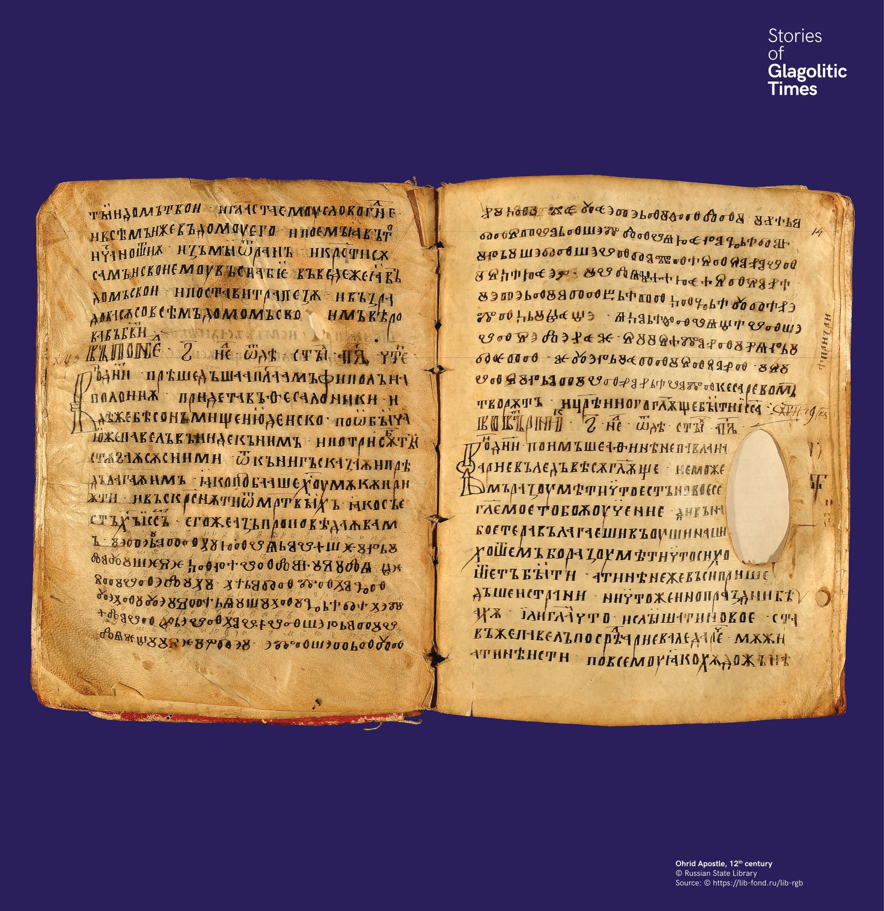

Ohridi apostolos könyv
A 12. századi Ohridi apostoloskönyv másolói magabiztosan hagytak glagolita töredékeket cirill kéziratukban, valószínűleg átírandó mintakézirat alapján.


A 12. századi Ohridi apostoloskönyv másolói magabiztosan hagytak glagolita töredékeket cirill kéziratukban, valószínűleg átírandó mintakézirat alapján.
В Охридския апостол от XII век писарите оставят глаголически откъси в кирилския текст.